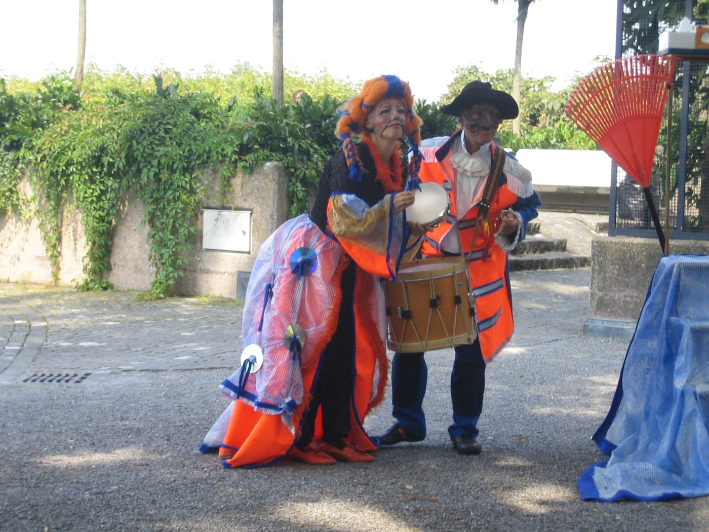
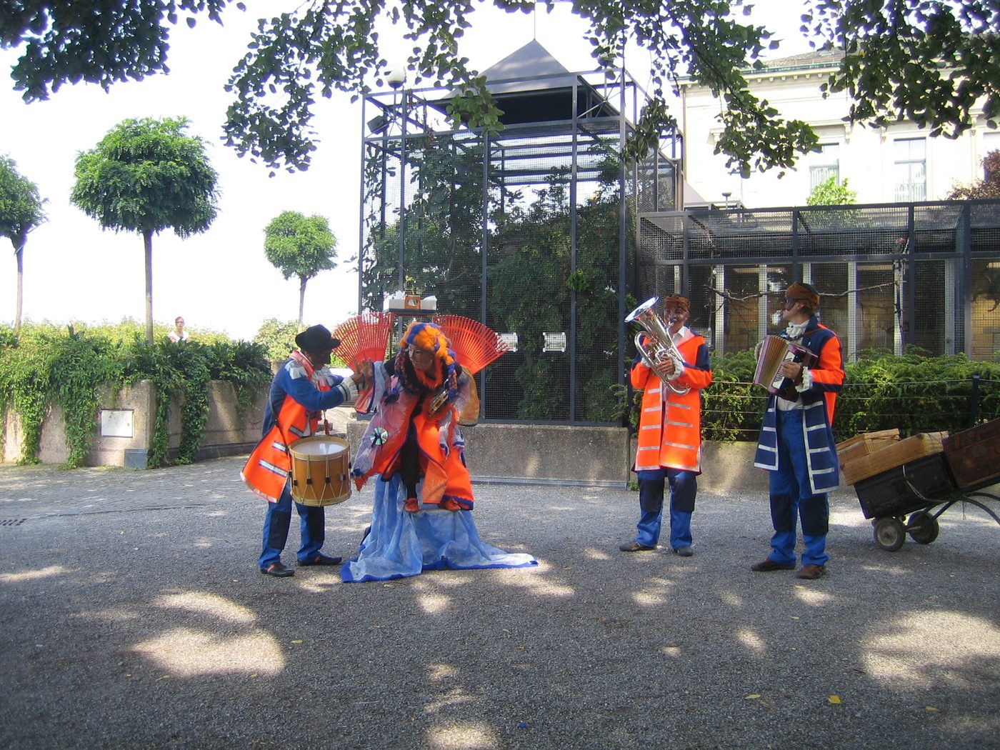
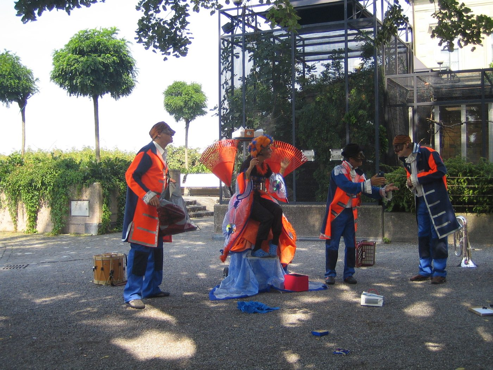
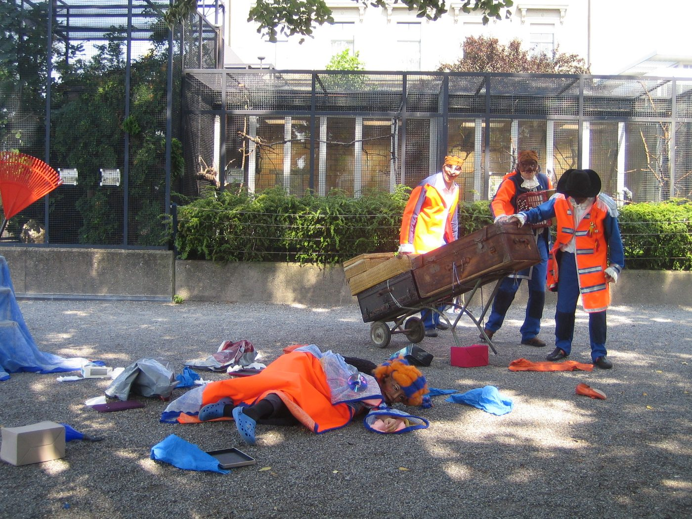
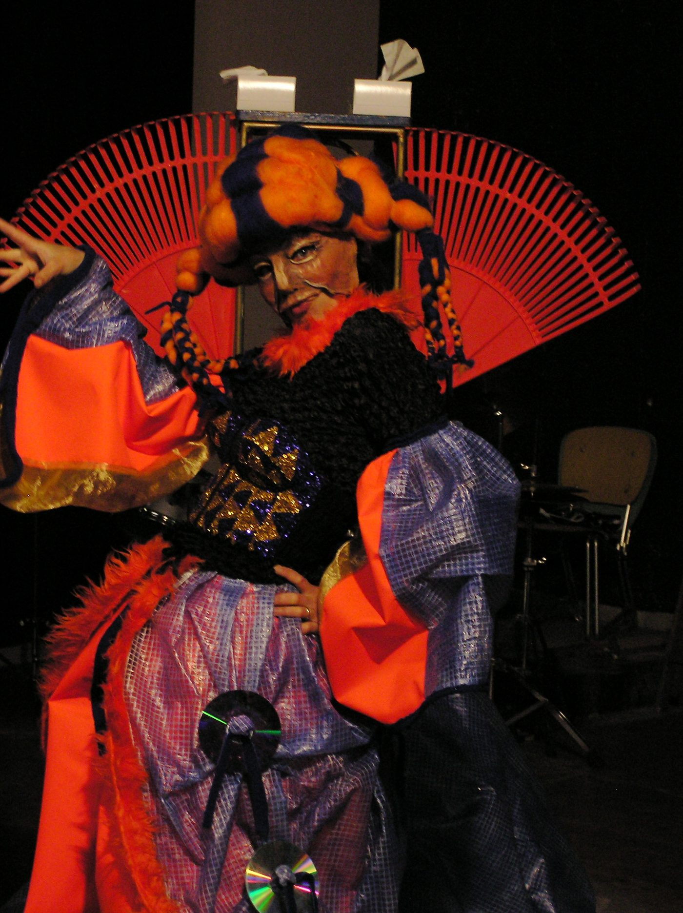

Für das Amt für Umwelt und Energie der Stadt Zug realisierte N!NA Theater ein augenzwinkerndes Stück über die Unsitte des «Litterings»: Drei Diener in orangen, barock anmutenden Uniformen schieben ihre prächtige Königin über den Platz – und sammeln ein, was die Leute liegen lassen.
Gespielt wurde «Glittering» im Juni 2008 in 36 Kurzvorstellungen auf dem Zuger Landsgemeindeplatz und im Einkaufscenter Metalli – mitten im Alltag, bei freiem Eintritt, jeweils rund zwanzig Minuten lang. Daneben trat das Ensemble auch in den Stadtzuger Schulen auf.
«Vier Darsteller in schrägen Kostümen sind in den nächsten Wochen auf Zugs Strassen zu sehen. Sie sollen die Zuger zur Einsicht bringen.» Stephanie Hess, Neue Zuger Zeitung, 18.6.2008




